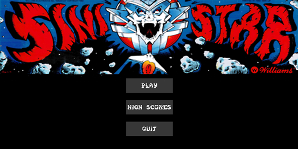

Project Description
This project involved re-creating a classic 80s arcade game using modern coding and design practices to bring it up to date with modern standards.
Project Info
Role: Programmer
Team Size: 1
Time Frame: 8 Weeks
Engine & Language: C++ with the SFML Libraries
Project Introduction
As part of my low level gameplay module, I was tasked to reverse engineer a classic 80s arcade game and update it's codebase using modern C++ practices. The arcade game I chose to re-make was Sinistar, a classic bullet hell space shooter developed by Williams Electronics in 1982. Over the course of the 8 week semester, I created base engine functionality to handle rendering as well as a state machine. Afterwards, I developed the core mechanics of the game and developed the AI of the game's enemies.
Highlighted Mechanics
#1 Animation Component
To animate the sprites, an animation Component was created, this could be attached to entities to allow animations to be played. The play animation function would be called in the entity's update function. To cycle through the animation, the sprite sheet is loaded into the component along with the rect size of each animation frame. Play would increment a timer and when it equals the animation timer variable, the next frame of the animation would be showed. This was done by changing the textureRect of the animation sprite sheet.
#2 Sinistar
The main game mechanic to re-create was the sinistar themselves. As with everything that required something to be rendered on screen, it is a child of the entity class, as rendering is handled there. A function was created to allow the boss to follow the player, this was done by normalising the vector of the difference between the player position and boss position. As for the collision, every time it collided with a sinibomb, the only thing that damage the boss, the animation component of the boss's outer body is called to run the step to next animation function. This makes it appear like a piece is destroyed every time a bomb hits the boss.
Project Reflection
Overall this project turned out very well, despite being the second time I have worked on creating a game outside an established games engine. I managed to re-create all core mechanics pretty faithully, however I can definetely improve on the backend code. This is because although game works smoothly, the processes on the backend are not optimised and can be improved in terms of memory effeciency.
- 